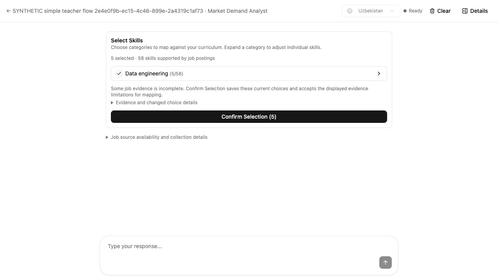
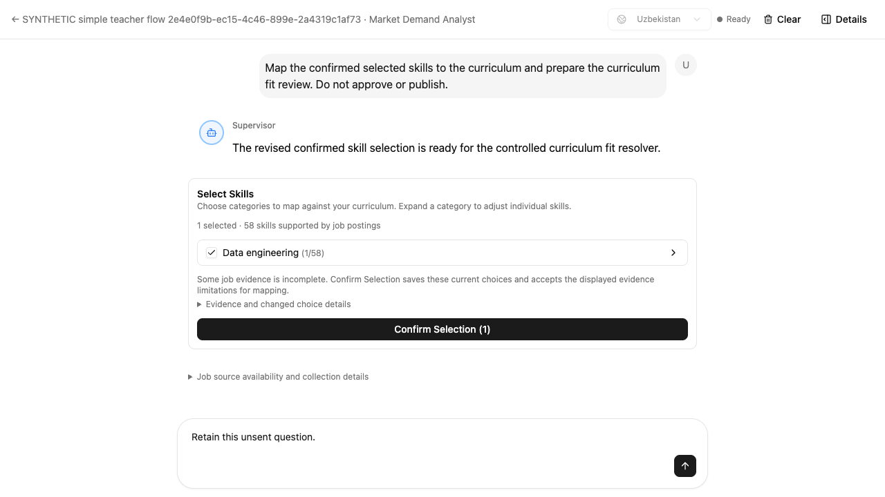
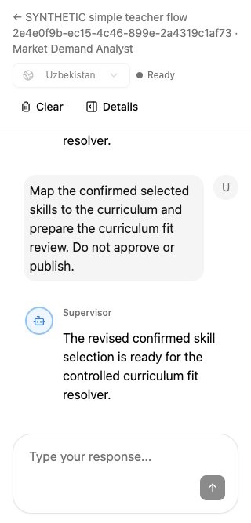
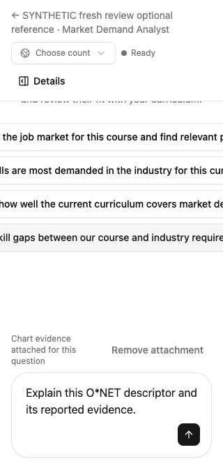

Historical first-pass report. This test used one category containing 58 skills. It did not cover the later-discovered 41-category production shape. See the updated review for that reproduction and retest.
The conversation flow is restored.
Both material issues were fixed and retested.
Same old main interaction: yes. Teachers continue through conversation, search terms, job groups, skill choices, and curriculum fit. No provider setup, draft-saving, reconciliation, or separate evidence-acknowledgment stage is required. O*NET and compact comparisons are available through Details. Publication still requires an explicit approval.

Findings resolved during this review
| Severity | Reproduction and impact | Verified correction |
|---|---|---|
| P2 | After a curriculum-fit review appeared, the checklist disappeared and no control reopened it. Teachers could not revise their shortlist after seeing the mapping.frontend/src/features/market-demand/pages/MarketDemandPage.tsx:233 | Change selection opens the same inline checklist. Deselecting ETL and confirming saved SQL only; publication remained zero. A stale stored review automatically reopened choices at 1280 and 320 pixels. |
| P2 | A completed model response with no prepared integration review hid all skill controls. Completion was incorrectly treated as proof that mapping existed.frontend/src/features/market-demand/pages/MarketDemandPage.tsx:236 | Retested after actual stream_end / completed: no integration review, checklist still available, unsent question retained, no publication. |
| P3 | Long optional O*NET Ask labels overflowed their cards at 320 pixels; Ask also returned keyboard focus to the document body.components/OccupationReferencePanel.tsx:170pages/MarketDemandPage.tsx:288 | Labels now wrap. At 320 pixels the dialog has equal client and scroll widths (286 px). Ask focuses Question at all three tested sizes. |
Behavior actually exercised
| Check | Result |
|---|---|
| Category and individual selection | Keyboard category selection included all 58 members. Excluding competency 11 on page 2 changed the count to 57 and survived paging away and back. |
| Merged ETL / ELT evidence | All four distinct original posting links remained. Each posting retained both validated phrases: “Create ETL pipelines” and “Develop ETL/ELT services”. Escape returned focus to Inspect ETL / ELT. |
| Optional details | Comparison pages contained at most five skills. A new empty course could search Data, browse Data Scientists, inspect importance, and stage a question without changing analysis or selection. |
| Exact confirmation and protection | One real API confirmation saved SQL, with ETL / ELT and Python excluded. No approval call occurred. Stale revision (409), cross-course run (422), changed omissions (409), and overlapping IDs (422) left the entire saved review unchanged. |
| Layout and keyboard | 1280 × 720, 390 × 844, and 320 × 667; Space, Enter, and Escape. No horizontal page overflow. No browser runtime errors in successful runs. |
| Provider orchestration | Code defaults to Indeed, LinkedIn, and HeadHunter, records unavailable branches, and collects available branches. The coordinator’s saved acceptance evidence confirms Uzbekistan and USA flows: six postings, six retained original links, and no extra acknowledgment step. |







Evidence and boundaries
The reviewer used real UI, authentication, API, SQL, and Neo4j fixtures. Model output and remote providers were controlled; this review does not establish live provider availability or unconstrained model quality. Exact publication/student-data preservation was verified in the coordinator’s separate acceptance course. The reviewer’s course remains unpublished. The stale proposal used for testing was restored.
Scoped code review covered confirmation transaction/rollback, revisions and course ownership, selection reconciliation, provider availability, prompt handoffs, and optional chart/reference behavior. git diff --check passed. No requested teacher behavior was excluded as out of scope.